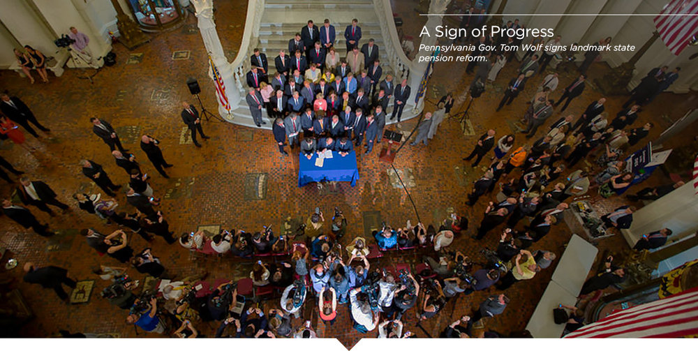
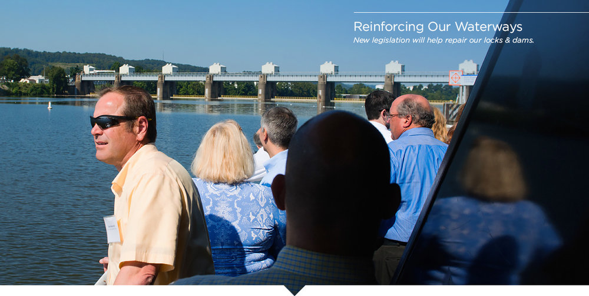
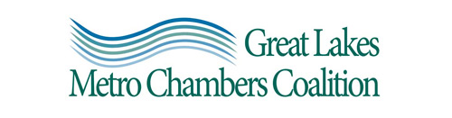
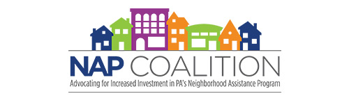

Moving our Region Forward through Advocacy
We advocate at the local, state and federal levels of government to improve the economy and quality of life in the Pittsburgh region.

Historic State Pension Reform
We accomplished our top state policy priority by successfully advocating for the passage of historic state pension reform that will save Pennsylvania up to $20 billion over 30 years. The law also meets the key principles that we had been advocating for in a meaningful solution. It addresses the ever increasing unfunded pension liability; provides for cost sharing and risk predictability between state employees and taxpayers; increases the overall funding certainty of the retirement systems; and provides adequate retirement security for beneficiaries of the plans.
The bipartisan reform was hailed by both the Washington Post and The Wall Street Journal.
"Gov. Tom Wolf signed a pension reform law that will help the state appropriately compensate its future employees while reducing risks to its taxpayers."
"State and local governments owe at least a trillion dollars to public employee pensions. So it is welcome news that some politicians are noticing, and this week Pennsylvania took a step toward sanity in worker benefits."

Appropriations Funding for Upper Ohio Engineering & Design Work
We successfully advocated to secure initial appropriations funding for the Upper Ohio Engineering & Design Work, following last year’s passage of the Water Infrastructure Improvements for the Nation (WIIN) Act. The passage of the WIIN Act was made possible by working closely with partners like the Port of Pittsburgh Commission and the Great Lakes Metro Chambers Coalition.
Federal Tax Reform
We worked to influence provisions in the federal tax reform legislation as a member of the Great Lakes Metro Chambers Coalition (GLMCC). These provisions include the reduction of the corporate tax rate to 21 percent and rough equivalency for pass-through entities; immediate expensing of business investments; extension of the R&D tax credit; and support for continuation of private activity bonds.
Moving Policy through Coalitions
The Greater Pittsburgh Chamber of Commerce believes there is power in numbers when it comes to legislative advocacy at the federal, state and local levels. By working with partners in coalitions at these different policy tiers, we achieve more together. Here are a few examples of how our participation in coalitions drove regional improvement in 2017.
We co-lead the Great Lakes Metro Chambers Coalition (GLMCC) – a network of 36 metropolitan chambers of commerce across 12 U.S. states and two Canadian provinces in the Great Lakes region. The GLMCC is pioneering a new type of collaborative model between federal, state and local governments and the private sector to develop the groundwork for a stronger, more interconnected Great Lakes region. Our leadership of the GLMCC helped pass and secure initial appropriations funding for the WIIN Act, and advanced positive provisions in the federal tax reform law, referenced above. Visit Great Lakes Metro Chambers Coalition to learn more.
Since 2005 our organization has led CompetePA, a coalition of over 130 members – including nearly all statewide and regional business groups, small businesses and Fortune 500 companies. CompetePA is the statewide voice representing the business community on corporate tax issues. In 2017, we were successful in advancing our top public policy priority for this coalition of "increasing the cap on the Net Operating Loss (NOL) carryforward provision within the Corporate Net Income Tax structure." Visit CompetePA to learn more.
In 2017, we helped to create the statewide NAP Coalition to encourage increased investment in Pennsylvania’s Neighborhood Assistance Tax Credit Program (NAP), a key aspect of our Strengthening Communities Partnership (SCP). The NAP tax credit provides long-term sustainable support for locally-based revitalization organizations in low income neighborhoods and leverages additional resources into the community by creating true public-private partnerships. In December 2017, Governor Tom Wolf announced that $7.1 million in NAP funding will flow to southwestern Pennsylvania communities, including to all of the SCP communities, for projects planned in 2017-18.